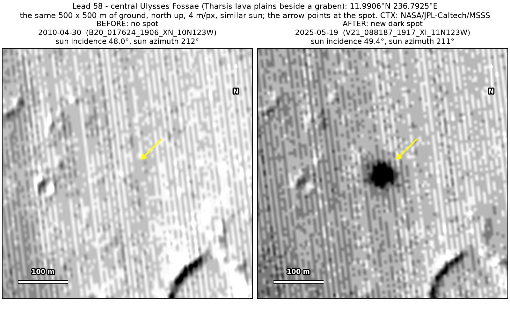
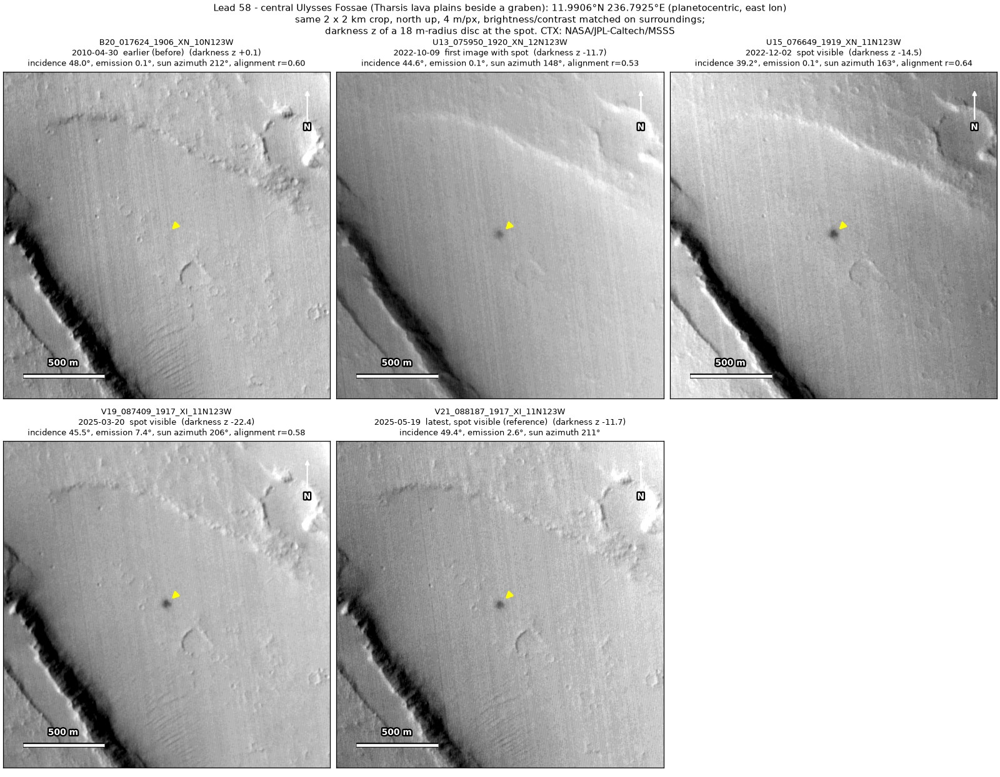
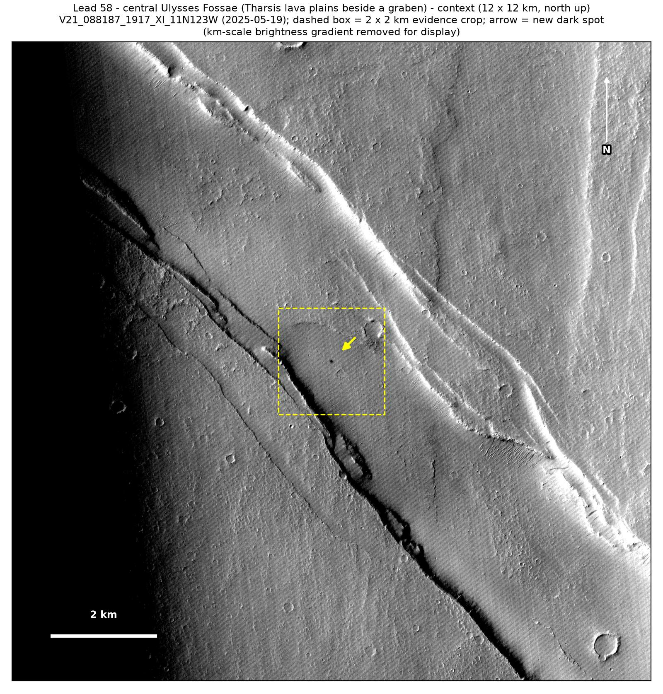
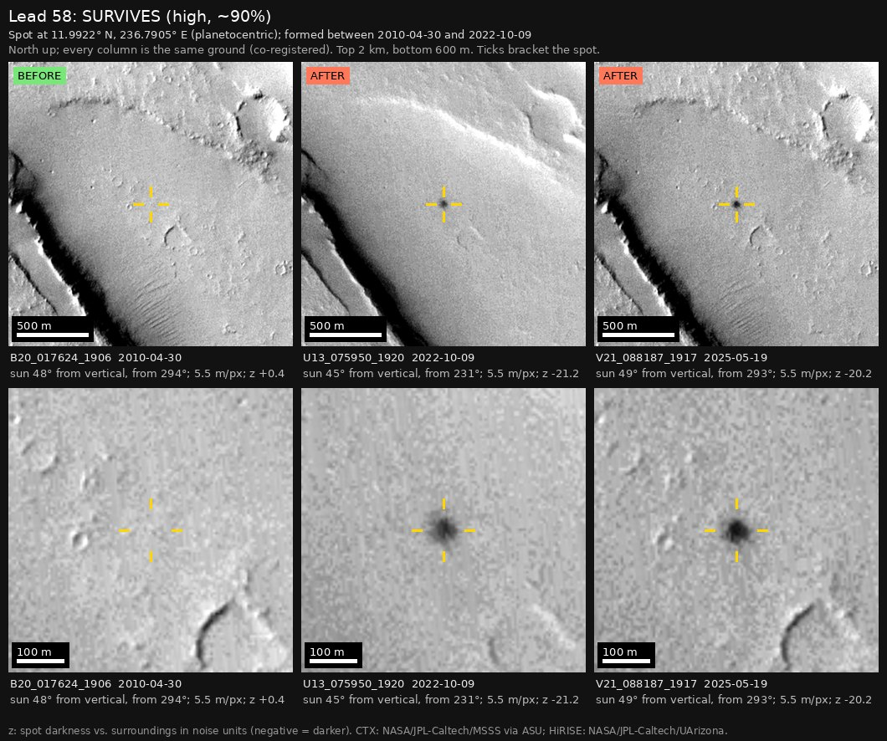

Professor of Mathematics
Paata Ivanisvili
Department of Mathematics, University of California, Irvine

← Possible new impact sites on Mars
Candidate 58: Central Ulysses Fossae, Tharsis lava plains beside a graben
Strong · roughly 90%

What changed. A compact, very dark spot about 45 m across appeared on smooth lava plains beside a graben (a long fault trough) in central Ulysses Fossae, between April 2010 and October 2022, and is unchanged up to May 2025, in four CTX images from four orbits.
Why it may be a new impact. An April 2010 image, taken under the same sun as the May 2025 image, shows nothing there, so the spot is not a shadow, while a dark feature 230 m to the south-south-east shows clearly in it. A compact, very dark spot unchanged for more than two and a half years under four different suns is unlikely to be darker ground exposed by the wind, and is the typical mark of a small new impact.
- Location
- 11.991° N, 236.792° E (123.208° W)
- Absent
- 30 April 2010
- Present
- 9 October 2022, 2 December 2022, 20 March 2025 and 19 May 2025
- Size
- Compact, very dark spot with a core about 45 m across
- Confidence
- Strong candidate; roughly 90% that it is a new impact.
- Caveat
- With only one earlier image, the window is more than 12 years long. It lies outside every footprint of the high-resolution HiRISE camera; the nearest ends 18.9 km away. Like every candidate here, it is unconfirmed: see the caveat.


